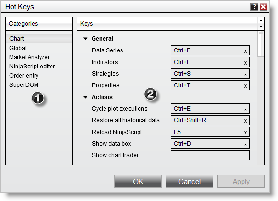
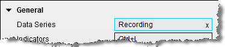
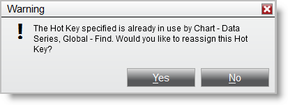
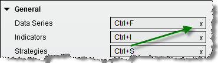
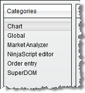
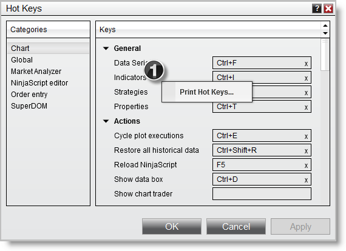

|
<< Click to Display Table of Contents >> Working with Hot Keys |


|
Working with Hot Keys
|
<< Click to Display Table of Contents >> Working with Hot Keys |
|
You can customize the Hot Keys by assigning the desired key stroke in the related action field. You also have the ability to print the full list of actions and their related Hot Keys for easy reference.
 Understanding the Hot Keys window
Understanding the Hot Keys window
 1. Active Window Categories The Categories section displays a list of NinjaTrader windows where Hot Keys can be assigned. Please see the "Understanding when Hot Keys are active" section of this page for more information on the active window.
2. Available Actions and Hot Keys The Keys section displays the actions available for Hot Key assignment within the selected active window. |
 Assigning and Removing Hot Keys
Assigning and Removing Hot Keys
Assigning a Hot KeyYou can assign a key stroke as a Hot Key to the desired action by completing the following steps:
1. Move your mouse over the action field where you want your Hot Key assigned, "Click to record hot key" should display 2. Left mouse click on the field to begin recording 3. Use the keyboard to select the Hot Key combination 4. Recording will finish as you input the hot key on your keyboard or press esc to cancel the recording


Removing a Hot KeyTo remove a Hot Key left mouse click in the action field on the "X" icon.
 |
 Understanding when Hot Keys are active
Understanding when Hot Keys are active
Hot Keys are window sensitive. This means that Hot Keys will only work when the active window is selected. The name of the window that needs to be active is located in the left column of the Hot Keys window.
 GlobalHot Keys assigned under the Global section are always active regardless of the active NinjaTrader window with the exception of a modal window having focus. See the "Understanding the risks in using Hot Keys for order entry" section of the Trading with Hot Keys page of the Help Guide for more information on the modal form exception. Order EntryHot Keys assigned under the Order Entry section are active whenever an order entry window is selected. Please see the Trading with Hot Keys section of the Help Guide for more information on this topic. |
 How to print your Hot Keys for reference
How to print your Hot Keys for reference
NinjaTrader gives you the ability to print your assigned Hot Keys for convenient reference.
Printing Hot Keys1.To print a full list of your Hot Keys, right mouse click in the Hot Key Manager and select the Print Hot Keys... menu item.  |